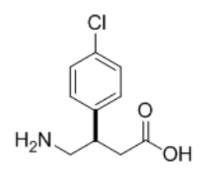
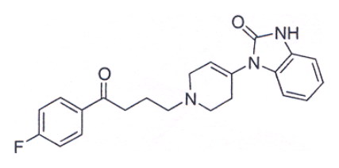
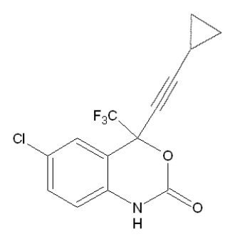

開卷有益 ／
藥師 ／ 藥理學與藥物化學 ／ 102 年第 1 次102 年第 1 次藥師藥理學與藥物化學試題與答案
這一頁是民國 102 年第 1 次藥師藥理學與藥物化學的整份歷屆試題，共 80 題，題目與標準答案出自考選部「國家考試試題及測驗式試題答案」開放資料，其中 70 題附有詳解。以下逐題列出題幹、選項與答案；要計時作答或記錄成績，請用線上練習。
考選部原始場次代碼：102020
線上作答這一科 →
全部 80 題
第 1 題
下列有關藥物廓清率（CL）之敘述，何者錯誤？
（A） 藥物清除速率等於CL與藥物濃度之乘積（B） 全身廓清率等於各器官組織廓清率之總和（C） 靜脈輸注給藥之速率等於CL與穩定狀態藥物濃度之乘積（D） 藥物之半衰期（t1/2）等於穩定狀態分布容積與CL之乘積答案：（D）
詳解與考點 正解：廓清率與半衰期的關係是 t1/2 = 0.693 × Vd / CL；半衰期隨分布容積增加而變長，隨廓清率增加而變短。（D）把 CL 寫成相乘，且漏掉 0.693，方向與式子都錯，故選 D。
A：在一般線性藥動學下，藥物清除速率 = CL × C；濃度越高，單位時間被清除的量越多，敘述正確。
B：全身廓清率可視為各清除器官或組織廓清率的加總，肝、腎等平行清除途徑皆納入，敘述正確。
C：靜脈輸注達穩定狀態時，輸注速率 = CL × Css，輸入速率與清除速率相等，敘述正確。
本題考點：廓清率（clearance, CL）——用 CL × C 求清除速率，用 CL × Css 求穩定狀態輸注速率；半衰期（half-life, t1/2）——以 0.693 × Vd / CL 判斷方向，Vd 在分子、CL 在分母。
第 2 題
下列有關藥物分布容積（Vd）之敘述，何者錯誤？
（A） Vd 是體內藥量與血中藥物濃度的比值（B） 藥物之Vd不會超過全身體之水容積（C） 完全留在血管內的藥物具有極小的Vd（D） 由藥物作用在標的器官之血中濃度與其Vd值的乘積可推算藥物之負載劑量答案：（B）
詳解與考點 正解：分布容積是由體內藥量與測得的血中濃度換算出的表觀容積，不是解剖學上的實際水量。藥物若大量分布到組織，血中濃度可很低，Vd 因而可大於全身體水容積；（B）說不會超過，故為錯誤敘述，故選 B。
A：Vd = 體內藥量 / 血中藥物濃度，是分布容積的基本關係式，敘述正確。
C：藥物若幾乎完全留在血管內，測得的血中濃度較高，換算出的 Vd 很小，敘述正確。
D：靜脈負載劑量可由目標血中濃度 × Vd 推算；分辨關鍵在它是為了快速建立目標體內藥量的估算，敘述正確。
本題考點：分布容積（volume of distribution, Vd）——把它當作濃度與體內藥量的表觀比例，不可當作真實體液容積；負載劑量（loading dose）——靜脈投與時以目標濃度 × Vd 估算，組織分布愈廣所需劑量愈大。
第 3 題
下列何種抗生素可抑制細菌之DNA gyrase而產生殺菌作用，且可用於治療綠膿桿菌 （Pseudomonas aeruginosa）感染？
（A） Aztreonam（B） Ciprofloxacin（C） Gentamicin（D） Ticarcillin答案：（B）
詳解與考點 正解：題目同時給出 DNA gyrase 抑制與可治療 Pseudomonas aeruginosa 感染兩個線索。Ciprofloxacin 是 fluoroquinolone，藉抑制細菌 DNA gyrase 造成殺菌作用，也具有綠膿桿菌活性，故選 B。
A：Aztreonam 也可涵蓋部分革蘭陰性菌並可用於綠膿桿菌，但其作用位置是細胞壁合成相關的 penicillin-binding proteins，不是 DNA gyrase。
C：Gentamicin 對綠膿桿菌可具活性，這是強誘答之處；但其殺菌機轉是結合 30S 核糖體抑制蛋白質合成，不是抑制 DNA gyrase。
D：Ticarcillin 可用於綠膿桿菌相關感染，但屬 β-lactam，主要抑制細胞壁交聯，機轉與題幹不符。
本題考點：fluoroquinolones——看到 DNA gyrase 或 topoisomerase IV 抑制時，優先判定此類抗生素；綠膿桿菌治療（Pseudomonas aeruginosa treatment）——多類藥可有活性，須再以作用位置區分；DNA gyrase——此標的是細菌 DNA 複製相關酶，不是核糖體或細胞壁蛋白。
第 4 題
下列何種抗生素因腎毒性太大，不宜以注射方式給藥？
（A） Gentamicin（B） Neomycin（C） Nafcillin（D） Cefazolin答案：（B）
詳解與考點 正解：Neomycin 為 aminoglycoside，系統性注射會有顯著腎毒性與耳毒性風險，臨床上不宜以注射方式作全身給藥。其常見用途偏向局部或腸道內作用，故選 B。
A：Gentamicin 同屬 aminoglycoside，也要監測腎毒性，但仍可在適當監測與調整下作注射治療，不能與 Neomycin 的限制混為一談。
C：Nafcillin 為 β-lactam 類抗生素，可經注射用於治療，主要辨別點不在題目所稱的過大腎毒性。
D：Cefazolin 為 cephalosporin 類抗生素，具有注射劑型；其不屬因腎毒性過大而不宜注射的代表藥。
本題考點：Neomycin——系統性毒性限制其注射使用，判斷時要把局部或腸道用途與全身用途分開；aminoglycoside nephrotoxicity——同類藥皆須注意腎毒性，但各藥是否可系統性注射不能一概而論。
第 5 題
下列藥物何者可以口服？
（A） clotrimazole（B） nystatin（C） itraconazole（D） caspofungin本題送分，無標準答案
詳解與考點 本題經考選部公告一律給分。題目問「可以口服」之抗真菌藥，(C)itraconazole為可吸收之全身性口服抗真菌藥，屬明確正解；惟(B)nystatin臨床上亦常以口服懸液劑型用於腸胃道念珠菌感染（雖不被全身吸收），(A)clotrimazole亦有口含錠劑型經口投予，兩者是否符合「口服」之定義因「口服＝經口給藥途徑」或「口服＝口服吸收達全身治療效果」之定義寬嚴不同而產生爭議。(D)caspofungin為棘白菌素類，僅有針劑無口服劑型，可明確排除。作答以現行藥理學抗黴菌藥物劑型與給藥途徑教材為準。
第 6 題
藥物Oprelvekin之作用機轉為何？
（A） 刺激G-CSF受體（B） 活化IL-11受體（C） Erythropoietin受體作用劑（D） 促進heme之生合成答案：（B）
詳解與考點 正解：Oprelvekin 是 recombinant human interleukin-11，作用於 IL-11 receptor，促進巨核細胞相關造血並增加血小板生成。因此其作用機轉是活化 IL-11 受體，故選 B。
A：刺激 G-CSF receptor 是促進嗜中性白血球生成的路徑，代表性藥物為 G-CSF 類，與 Oprelvekin 的 IL-11 作用不同。
C：Erythropoietin receptor agonist 主要促進紅血球生成；Oprelvekin 的臨床目標是血小板生成而非紅血球生成。
D：heme 生合成與 Oprelvekin 的受體致效機轉無關。分辨關鍵在它是 cytokine receptor agonist，不是直接提供或促進 heme 合成的藥物。
本題考點：Oprelvekin——看到 IL-11 即連結巨核細胞與血小板生成，不與 G-CSF 或 erythropoietin 混淆；cytokine receptors——依受體判斷造血細胞譜系，G-CSF 對嗜中性白血球、erythropoietin 對紅血球、IL-11 對血小板。
第 7 題
有關statins類藥物之敘述，下列何者錯誤？
（A） Rosuvastatin具有較長的半衰期（B） 為三酸甘油脂高血脂症之首選藥物（C） 與fibrates併服會產生肌病（myopathy）（D） 併用barbiturates會改變代謝答案：（B）
詳解與考點 正解：本題要求找出錯誤敘述，判斷重點是 statins 的主要降脂目標為 LDL-C；對以三酸甘油脂顯著升高為主的情形，並非首選藥物類別。（B）把 statins 說成三酸甘油脂高血脂症的首選，忽略其與 fibrates 在主要降脂目標上的差異，故選 B。
A：rosuvastatin 的消除半衰期在 statins 中相對較長，這項敘述符合其藥動學特性。
C：fibrates 與 statins 都可能造成骨骼肌毒性，併用時肌病（myopathy）及更嚴重肌肉不良反應的風險會升高，故此敘述正確。
D：barbiturates 可誘導肝臟藥物代謝酵素；對經相關酵素代謝的 statins，併用確可改變其代謝與血中濃度。
本題考點：statins（HMG-CoA reductase inhibitors）——先辨認其核心效果是降低 LDL-C，再判斷是否符合題目所問的脂質異常型態；fibrates——以三酸甘油脂為主要治療目標時，應與 statins 的 LDL-C 導向作用區分；藥物交互作用（drug interaction）——兩藥若共同增加肌毒性或改變代謝，不能只看其降脂效果。
第 8 題
下列何項不是Heparin之副作用？
（A） 肝功能不正常（B） 血脂過多（C） 血小板減少症（D） 骨質疏鬆症答案：（B）
詳解與考點 正解：題目問的是 Heparin 的非典型副作用，應將抗凝治療已知的不良反應與脂質代謝方向分開判斷。（B）血脂過多不是 Heparin 的代表性毒性；Heparin 可促使 lipoprotein lipase 釋出，並非以造成高血脂為特徵，故選 B。
A：Heparin 治療期間可見肝酵素上升等肝功能異常，屬已知但常為可逆的不良反應。
C：血小板減少症可見於 Heparin，其中免疫相關的 heparin-induced thrombocytopenia 具有血栓風險，是重要安全性問題。
D：長期使用 Heparin 會干擾骨代謝並增加骨質流失，骨質疏鬆症是長期治療須留意的副作用。
本題考點：Heparin 不良反應（heparin adverse effects）——遇到抗凝藥副作用時，優先辨認出血、血小板減少與長期骨代謝影響；heparin-induced thrombocytopenia——血小板下降合併血栓傾向時，不能把它當成單純出血風險；脂蛋白脂酶（lipoprotein lipase）——判斷血脂方向時，要區分酵素釋出效應與高血脂本身。
第 9 題
Fludrocortisone之適應症為何？
（A） 愛迪生氏症（Addison's disease）（B） 先天性腎上腺增生症（congenital adrenal hyperplasia）（C） 缺乏血管加壓素（vasopressin）（D） 糖尿病性酮酸中毒（diabetic ketoacidosis）本題送分，無標準答案
第 10 題
下列何種藥物最適合用於促進胎兒肺部成熟，以預防早產嬰兒呼吸窘迫症候群（respiratory distress syndrome）之問題？
（A） Hydrocortisone（B） Prednisolone（C） Fludrocortisone（D） Betamethasone答案：（D）
詳解與考點 正解：關鍵在早產前促進胎兒肺部 surfactant 成熟；可有效通過胎盤並發揮此作用的產前 glucocorticoid 為 betamethasone。（D）可促進肺泡成熟、降低早產兒 respiratory distress syndrome 的風險，故選 D。
A：hydrocortisone 主要用於腎上腺皮質素替代或抗發炎治療，並非本題所問的胎兒肺成熟標準選擇。
B：prednisolone 常用於母體的抗發炎或免疫調節；它與 betamethasone 在胎盤轉運及產前肺成熟用途上應區分。
C：fludrocortisone 以礦物皮質素活性為主，用於鈉水分平衡的替代，不能作為促進胎兒肺部成熟的藥物。
本題考點：產前 corticosteroid（antenatal corticosteroid）——早產風險下要辨認能促進胎兒肺成熟的 glucocorticoid；肺表面活性物質（surfactant）——胎兒肺成熟的判斷指向降低呼吸窘迫，而不是母體的抗發炎需求；礦物皮質素作用（mineralocorticoid activity）——以鈉水滯留為主的藥物不等於產前肺成熟藥。
第 11 題
當糖尿病病人出現酮酸中毒（Diabetic ketoacidosis）現象時，下列何種控制血糖藥物最適合改善 此病情？
（A） Glucagon（B） Regular insulin（C） Tolbutamide（D） Repaglinide答案：（B）
詳解與考點 正解：糖尿病性酮酸中毒的急性處置必須迅速降低高血糖並抑制脂解與酮體生成，因此要選可靜脈給藥且易於調整的 regular insulin。（B）能直接補足胰島素作用並停止酮酸中毒的代謝鏈，故選 B。
A：glucagon 會提高血糖並促進肝醣分解，方向與糖尿病性酮酸中毒所需的降血糖處置相反。
C：tolbutamide 是口服 sulfonylurea，靠刺激胰島素分泌治療慢性高血糖，無法取代急性靜脈胰島素處置。
D：repaglinide 為口服促胰島素分泌劑，作用適合餐後血糖調控，不適用於需立即處理酮酸中毒的情境。
本題考點：糖尿病性酮酸中毒（diabetic ketoacidosis）——急性高血糖合併酮體問題時，先選能抑制酮體生成的胰島素處置；regular insulin——需要快速滴定的急症時，選可靜脈使用的製劑而非口服降血糖藥；促胰島素分泌劑（insulin secretagogues）——僅在胰島 β 細胞仍能分泌且病況穩定時才是主要選項。
第 12 題
有關Desmopressin之敘述，下列何者最正確？
（A） 主要用於治療腎因性尿崩症（nephrogenic diabetes insipidus）（B） 作用於Vasopressin V1受體可以產生抗利尿作用（C） 屬於類固醇結構之製劑（D） 可以促進第八凝血因子的釋放答案：（D）
詳解與考點 正解：desmopressin 除了模擬 vasopressin 的抗利尿作用，也能促進內皮細胞釋放 von Willebrand factor 與第八凝血因子。（D）所述為其用於特定出血性疾病時的重要藥理效果，故選 D。
A：腎因性尿崩症是腎臟對 vasopressin 反應不足，desmopressin 通常無法有效改善；可反應的主要是中樞性尿崩症。
B：抗利尿主要由 vasopressin V2 受體介導，V1 受體較與血管平滑肌收縮相關，兩者不能互換。
C：desmopressin 是 vasopressin 的胜肽類似物，不是類固醇結構製劑。
本題考點：desmopressin——看到中樞性尿崩症或需要提升 von Willebrand factor 時，才聯想到此 vasopressin 類似物；V1/V2 受體——抗利尿判斷看 V2，血管收縮判斷看 V1；第八凝血因子釋放（factor VIII release）——藥物能提升凝血相關蛋白時，要與直接補充凝血因子區分。
第 13 題
下列何者為短效性注射用藥，用於治療急性心律不整的藥物？
（A） Amiodarone（B） Quinidine（C） Esmolol（D） Verapamil答案：（C）
詳解與考點 正解：判準是急性心律不整時可注射且消除極快的藥物；esmolol 為超短效 β1-adrenergic antagonist，能以靜脈輸注迅速調整作用。（C）符合短效注射用藥的描述，故選 C。
A：amiodarone 可在部分急性心律不整情境注射使用，但其組織分布與消除都很長，不符合短效的判準。
B：quinidine 是 class Ia 抗心律不整藥，並非以超短效靜脈滴定作為其特徵。
D：verapamil 可用於特定上心室性心律不整，但它不是以 esmolol 那種極短半衰期作為急性輸注優勢的藥物。
本題考點：esmolol——需要短時間控制心率時，選擇可迅速起效與消退的 β1 阻斷劑；急性心律不整（acute arrhythmia）——先區分藥物是否可即時滴定，再看其適用的心律類型；半衰期（half-life）——題幹強調短效時，不能只因藥物也能注射就視為相同選項。
第 14 題
下列何者為最長效的抗心律不整藥物？
（A） Procainamide（B） Amiodarone（C） Verapamil（D） Disopyramide答案：（B）
詳解與考點 正解：最長效的判斷要看藥物是否高度脂溶、廣泛蓄積於組織並形成極長的終末消除期；amiodarone 具有這些特徵。（B）在列出的抗心律不整藥中作用持續最久，故選 B。
A：procainamide 的消除時間遠短於 amiodarone，雖可作為抗心律不整藥，並非本題所問的最長效者。
C：verapamil 是鈣離子通道阻斷劑，作用持續時間不具 amiodarone 的長期組織蓄積特性。
D：disopyramide 屬 class Ia 抗心律不整藥，但其藥效與消除持續時間均不及 amiodarone。
本題考點：amiodarone——比較抗心律不整藥的作用時程時，看到高度脂溶與組織累積要優先聯想它；終末消除期（terminal elimination phase）——分布到組織庫的藥物可造成遠長於一般血中消除的作用延續；抗心律不整藥分類（antiarrhythmic drugs）——同樣能控制心律，不代表藥動學時程相近。
第 15 題
患有心室性心跳過快的病人，長期服用下列何種藥物易引發類紅斑性狼瘡的副作用？
（A） Digoxin（B） Disopyramide（C） Procainamide（D） Minoxidil答案：（C）
詳解與考點 正解：長期使用後出現類紅斑性狼瘡，是 procainamide 的經典藥物不良反應；它可引發藥物誘發性狼瘡樣症候群。（C）同時也是治療心室性心跳過快的抗心律不整藥，最符合題意，故選 C。
A：digoxin 主要增加心肌收縮力並減慢房室傳導，其毒性以心律不整、胃腸與神經視覺症狀為主，不以狼瘡樣反應著稱。
B：disopyramide 也是 class Ia 藥物，但較具代表性的副作用是抗 muscarinic 作用造成的口乾、尿滯留等，與 procainamide 的狼瘡樣反應不同。
D：minoxidil 是直接血管擴張劑，常見辨識重點為反射性心搏過速、體液滯留與多毛，並非用於本題的抗心律不整長期治療。
本題考點：procainamide——遇到抗心律不整藥合併藥物誘發性狼瘡時，優先辨認此經典配對；藥物誘發性狼瘡（drug-induced lupus）——長期用藥後的免疫樣症狀要與原發性自體免疫疾病區分；class Ia antiarrhythmics——同類藥可有不同代表性毒性，不能只由分類推定。
第 16 題
孕婦服用下列何種藥物會造成胎兒腎臟的損傷？
（A） Captopril（B） Methyldopa（C） Minoxidil（D） Nitroprusside答案：（A）
詳解與考點 正解：孕期造成胎兒腎損傷的典型機轉是阻斷 renin-angiotensin system，降低胎兒腎臟灌流與發育所需訊號；captopril 為 ACE inhibitor。（A）因此可造成胎兒腎功能受損與相關羊水問題，故選 A。
B：methyldopa 是中樞性 α2-adrenergic agonist，與 ACE inhibition 的胎兒腎損傷機轉不同。
C：minoxidil 為鉀離子通道開啟型血管擴張劑，並不直接阻斷胎兒的 renin-angiotensin system。
D：nitroprusside 的重要毒性辨識為 cyanide 相關風險與過度降壓，不是 ACE inhibitor 所造成的胎兒腎損傷機轉。
本題考點：ACE inhibitors——孕期用藥題若連到胎兒腎臟與羊水異常，應優先排查此類藥；renin-angiotensin system——胎兒腎灌流與發育依賴此系統時，阻斷它會造成特徵性傷害；妊娠用藥風險（pregnancy drug risk）——要以藥物機轉連結特定胎兒器官毒性，不只背誦降壓藥名稱。
第 17 題
那一種降壓藥物會因cyanide（氰離子）蓄積而引起毒性作用？
（A） Minoxidil（B） Diazoxide（C） Hydralazine（D） Sodium nitroprusside答案：（D）
詳解與考點 正解：題幹指定 cyanide 蓄積，應聯想到可釋放 nitric oxide 的 sodium nitroprusside；其代謝過程會產生 cyanide，累積時可導致毒性。（D）完全符合此特徵，故選 D。
A：minoxidil 以開啟血管平滑肌鉀離子通道而擴張小動脈，不是 cyanide 來源。
B：diazoxide 同樣與鉀離子通道開啟有關，主要辨識重點不是 cyanide 代謝物。
C：hydralazine 為直接小動脈血管擴張劑，長期毒性可見狼瘡樣反應，但不會因 cyanide 蓄積造成題述毒性。
本題考點：sodium nitroprusside——急性降壓藥題出現 cyanide 時，可直接連結此 nitric oxide donor；cyanide toxicity——持續暴露或清除受限時，要留意會釋放 cyanide 的藥物；血管擴張劑（vasodilators）——同為降壓藥仍須按作用機轉分辨代謝物風險。
第 18 題
下列何種Loop diuretics有最長之藥效半衰期（t1/2）？
（A） Furosemide（B） Bumetanide（C） Ethacrynic acid（D） Torsemide答案：（D）
詳解與考點 正解：本題比較 loop diuretics 的藥效半衰期，需在同類藥內辨認作用持續最久者；torsemide 的時程長於題列其他三者。（D）因此是最長效的選項，故選 D。
A：furosemide 為常用 loop diuretic，但作用時程相對較短，不是本題最長效者。
B：bumetanide 的利尿效力雖高，半衰期並未長過 torsemide；藥效強弱與作用時程是不同判準。
C：ethacrynic acid 也是 loop diuretic，常用於對 sulfonamide 結構不耐受時的替代考量，但不是題列中半衰期最長者。
本題考點：loop diuretics——同類利尿劑比較時，先分開藥效強度、起效速度與半衰期三個概念；torsemide——題幹問較長作用時程時，可作為 loop diuretics 中的辨識點；半衰期（half-life）——不能因利尿效果強就推論藥效必然最久。
第 19 題 待校
下列何藥物主要會抑制圖中位置3之H2O之吸收？
（A） Thiazide（B） Spironolactone（C） Furosemide（D） Mannitol答案：（D）
第 20 題
下列何者是Atropine中毒所呈現之症狀？
（A） 針狀瞳孔（B） 心跳減緩（C） 皮膚乾燥且潮紅（D） 唾液腺分泌增加答案：（C）
詳解與考點 正解：atropine 中毒是全身 muscarinic receptor 被阻斷，分泌物減少、皮膚血管擴張與散熱受阻會同時出現。（C）皮膚乾燥且潮紅正是典型 antimuscarinic toxidrome 的表現，故選 C。
A：atropine 會造成瞳孔散大而非針狀瞳孔；針狀瞳孔應聯想到相反的藥理方向。
B：阻斷心臟的 muscarinic 作用會使迷走神經抑制減少，通常呈現心跳加快，不是心跳減緩。
D：atropine 抑制腺體分泌，會導致口乾與唾液減少，與唾液腺分泌增加相反。
本題考點：antimuscarinic toxidrome——看到乾燥、潮紅、散瞳與心搏加快時，應整組辨認為 muscarinic blockade；瞳孔反應（pupillary response）——散瞳與針狀瞳孔代表相反的自主神經方向；腺體分泌——副交感被阻斷時，分泌減少而非增加。
第 21 題
下列何種副交感神經藥物不適用於治療廣角型青光眼（open-angle glaucoma）？
（A） Physostigmine（B） Pilocarpine（C） Echothiophate（D） Neostigmine答案：（D）
詳解與考點 正解：廣角型青光眼的副交感治療要能在眼部產生縮瞳與睫狀肌收縮，以增加房水外流；neostigmine 帶四級銨（quaternary ammonium）結構、極性高而脂溶性低，點眼難以穿透角膜，臨床用途在重症肌無力與術後腸麻痺而非眼科。（D）為不適用於治療廣角型青光眼的選項，故選 D。
A：physostigmine 是可逆性 acetylcholinesterase inhibitor，可在眼部增加 acetylcholine 作用以造成縮瞳，符合本題的治療方向。
B：pilocarpine 為直接 muscarinic agonist，能使瞳孔括約肌與睫狀肌收縮，促進房水外流。
C：echothiophate 是長效 acetylcholinesterase inhibitor，能增強眼部 cholinergic 作用，屬本題傳統藥理分類中的可用選項。
本題考點：廣角型青光眼（open-angle glaucoma）——需要增加房水外流時，判斷是否能誘發縮瞳與睫狀肌收縮；直接與間接 cholinomimetics——pilocarpine 直接刺激 muscarinic receptor，acetylcholinesterase inhibitors 則間接提高 acetylcholine；neostigmine——比較 cholinesterase inhibitors 的臨床用途時，先看結構能否穿透角膜，三級胺（tertiary amine）如 physostigmine 可穿透、四級銨如 neostigmine 不能，不能只因同類就推論皆適用眼科。
第 22 題
Pilocarpine可以產生下列何種藥理作用？
（A） 促進睫狀肌放鬆（B） 促進唾液腺分泌（C） 抑制腸胃道蠕動（D） 抑制汗腺之分泌答案：（B）
詳解與考點 正解：pilocarpine 是直接作用的 muscarinic agonist，會放大副交感神經對外分泌腺的作用。（B）促進唾液腺分泌正是其預期藥理效果，故選 B。
A：pilocarpine 會使睫狀肌收縮以利近距離調節，不是促進睫狀肌放鬆。
C：muscarinic 刺激會增加腸胃道平滑肌活動與蠕動，抑制腸胃道蠕動是 antimuscarinic 方向。
D：汗腺受 cholinergic 神經支配，pilocarpine 會增加而非抑制汗腺分泌。
本題考點：pilocarpine——看到口乾、需要促進分泌或縮瞳時，可聯想直接 muscarinic agonist；副交感神經作用（parasympathetic effects）——分泌、腸胃蠕動與平滑肌收縮通常同向增加；汗腺支配——判斷汗腺時要記得它受 cholinergic 作用調控。
第 23 題
終止交感神經末梢釋放之正腎上腺素（norepinephrine）作用的最主要機轉為何？
（A） 被交感神經末梢之正腎上腺素運輸體再回收（B） 被細胞外之COMT（catechol-o-methyl transferase）分解（C） 被細胞外之MAO（monoamine oxidase）分解（D） 被組織表面之正腎上腺素運輸體回收答案：（A）
詳解與考點 正解：終止交感神經末梢釋放的 norepinephrine，最主要且最快的方式是回到原本的神經末梢；這是 neuronal uptake，也稱 uptake 1。（A）明確指出由交感神經末梢的 norepinephrine transporter 再回收，故選 A。
B：細胞外 COMT 可參與 catecholamines 的代謝，但不是終止神經接頭 norepinephrine 作用的主要機轉。
C：MAO 主要位於細胞內，特別與回收後單胺類的代謝相關；把它寫成細胞外分解既錯在位置，也不是主要終止步驟。
D：組織外的再攝取可影響 norepinephrine 去向，但題幹問的是交感神經末梢釋放後最主要的終止機轉，應選突觸前末梢的 transporter。
本題考點：norepinephrine reuptake——交感神經傳遞結束時，先判斷是否由突觸前神經末梢回收；norepinephrine transporter——選項出現 neuronal uptake 或 uptake 1 時，通常指最主要清除途徑；COMT 與 MAO——兩者都參與代謝，但要同時辨別細胞內外位置與主要性。
第 24 題
下列何種藥物不屬於選擇性的β1-adrenergic antagonist？
（A） Atenolol（B） Betaxolol（C） Metoprolol（D） Pindolol答案：（D）
詳解與考點 正解：題幹要求找出不具選擇性 β1 阻斷作用的藥物；pindolol 阻斷 β1 與 β2 receptor，並具有 intrinsic sympathomimetic activity。（D）因此不是選擇性的 β1-adrenergic antagonist，故選 D。
A：atenolol 為典型較偏向 β1 的 adrenergic antagonist，符合題目所述分類。
B：betaxolol 對 β1 的選擇性較高，可與非選擇性 β-blockers 區分。
C：metoprolol 亦屬較具 β1 選擇性的 β-blocker，與 pindolol 的 β2 阻斷差異是判別重點。
本題考點：β1-selective blockers——比較 β-blockers 時，先看是否同時阻斷 β2 receptor；pindolol——若題幹出現 intrinsic sympathomimetic activity 或非選擇性 β 阻斷，應聯想到此藥；受體選擇性（receptor selectivity）——同屬 β-blocker 不代表支配的受體亞型相同。
第 25 題
下列何者會抑制Cytochrome p450的活性而增強其他藥物的作用？
（A） Ranitidine（B） Cimetidine（C） Famotidine（D） Cromolyn sodium答案：（B）
詳解與考點 正解：在 H2 receptor antagonists 中，cimetidine 具有抑制 cytochrome P450 的代表性，因而可減慢其他受質藥物的代謝並增強其作用。（B）符合題幹所述的交互作用機轉，故選 B。
A：ranitidine 雖同為 H2 receptor antagonist，對 cytochrome P450 的抑制遠不如 cimetidine，不能以同類藥身分直接視為相同。
C：famotidine 的 cytochrome P450 交互作用較少，與 cimetidine 的酵素抑制特徵不同。
D：cromolyn sodium 是 mast cell stabilizer，用於預防過敏相關症狀，並非藉由抑制 cytochrome P450 增強其他藥物作用。
本題考點：cimetidine——H2 receptor antagonist 題若出現廣泛藥物交互作用，優先辨認 cytochrome P450 inhibition；酵素抑制（enzyme inhibition）——受質藥物代謝變慢時，血中濃度與作用通常上升；同類藥比較——ranitidine、famotidine 與 cimetidine 共享抑酸作用，不代表交互作用強度相同。
第 26 題
下列有關angiotensinⅡ的敘述，何者錯誤？
（A） 會引起皮膚、腎臟及內臟部位微血管前小動脈的收縮（B） 增加腎上腺aldosterone分泌（C） 因為無法通過血腦障壁，故對腦部無直接的作用（D） 可增加ADH的分泌答案：（C）
詳解與考點 正解：題目要找錯誤敘述，關鍵在 angiotensin II 雖不易穿越一般血腦障壁，仍可作用於缺乏典型血腦障壁的腦部區域並調節口渴與 ADH。（C）以無法通過血腦障壁推論對腦部完全沒有直接作用，推論過度，故選 C。
A：angiotensin II 可使多處微血管前小動脈收縮，造成全身血管阻力上升，敘述正確。
B：angiotensin II 會刺激腎上腺皮質分泌 aldosterone，促進鈉滯留，這是 renin-angiotensin system 的核心作用之一。
D：angiotensin II 能增加 ADH 分泌並參與體液恆定，與其調節腦部體液感受的作用一致。
本題考點：angiotensin II——判斷其作用時，要同時連結血管收縮、aldosterone 與 ADH；血腦障壁外區域（circumventricular organs）——分子不能廣泛進入腦部，不等於無法作用於特殊腦區；renin-angiotensin system——血壓與體液調節題要用整條軸線判斷，而非只看單一器官。
第 27 題
下列那一種安眠藥（Hypnotics）其排除半衰期（half-life）最長？
（A） Eszopiclone（B） Estazolam（C） Flurazepam（D） Zolpidem答案：（C）
詳解與考點 正解：比較安眠藥的排除半衰期時，要把原藥與仍具活性的代謝物一起考慮；flurazepam 的長效活性代謝物會使整體作用與排除時程延長。（C）在題列 hypnotics 中半衰期最長，故選 C。
A：eszopiclone 為非 benzodiazepine 類安眠藥，作用時程較適合睡眠維持，仍不及 flurazepam 的長效代謝物。
B：estazolam 屬中等作用時程的 benzodiazepine，與 flurazepam 的長效特徵不同。
D：zolpidem 的設計重點是較短效的催眠作用，較少延續至隔日，故不會是本題最長半衰期者。
本題考點：flurazepam——安眠藥題出現最長效或隔日殘餘作用時，要想到其活性代謝物；活性代謝物（active metabolite）——比較半衰期不能只看原藥，仍須納入代謝後是否持續有藥理作用；hypnotics——入睡、睡眠維持與隔日殘效的差異，常由藥效時程決定。
第 28 題
有關Zaleplon之敘述，下列何者正確？
（A） 短效型鎮靜安眠藥物，易產生反彈性失眠的現象（B） 較Benzodiazepine類藥物不易產生耐藥性（C） 具有抗痙攣或肌肉鬆弛的特性（D） 可增加睡眠之非快速動眼期（non-rapid eye movement, NREM）之stage 2答案：（B）
詳解與考點 正解：Zaleplon 是選擇性較高的非 benzodiazepine 類鎮靜催眠藥，主要增強 GABAA 受體的鎮靜作用；相較傳統 benzodiazepine 類，其耐藥性與依賴風險較低，故選 B。
A：Zaleplon 雖屬短效藥物，但「易產生反彈性失眠」不是其相對於 benzodiazepine 類的典型優勢描述。分辨重點在其選擇性鎮靜作用使反彈失眠與依賴傾向通常較少，而非短效就必然容易反彈。
C：抗痙攣與肌肉鬆弛是較廣泛作用於 GABAA 受體次單元的 benzodiazepine 類特性；Zaleplon 以催眠效果為主，不能據此推論有同等的抗痙攣或肌肉鬆弛作用。
D：增加非快速動眼期第 2 期睡眠是傳統 benzodiazepine 類較常見的睡眠結構改變。Zaleplon 對睡眠結構的影響較小，主要縮短入睡時間，不能以增加 NREM stage 2 作為其特徵。
本題考點：非 benzodiazepine 類催眠藥（non-benzodiazepine hypnotics）——判斷 Zaleplon 時以選擇性催眠與較少耐藥、依賴傾向為主，不能直接套用傳統 benzodiazepine 類全部作用；睡眠結構（sleep architecture）——比較安眠藥時，要區分縮短入睡時間與改變 NREM、REM 分期兩件事。
第 29 題
吸入型全身麻醉劑的誘導速率（induction rate）可因下列何種因素而降低？
（A） 增加吸入混合氣體中全身麻醉劑的濃度（B） 增加心輸出量（cardiac output）（C） 增加肺泡換氣的速率（D） 減少心跳頻率答案：（B）
詳解與考點 正解：吸入麻醉的誘導速度取決於肺泡麻醉劑分壓上升的速度。心輸出量增加時，血液會從肺泡帶走較多麻醉劑，肺泡分壓上升變慢，因此腦部達到有效分壓的時間延後，故選 B。
A：提高吸入混合氣體中的麻醉劑濃度會拉大吸入端與肺泡端的分壓差，使肺泡分壓較快上升，誘導速度反而加快。
C：肺泡換氣加快會更快補充肺泡內的麻醉劑，尤其對血／氣分配係數較高的藥物更能加速肺泡分壓上升，並非降低誘導速率。
D：若心跳頻率下降並使心輸出量下降，肺部血液攝取麻醉劑的量會減少，肺泡分壓較易升高；判斷方向要看心輸出量對肺泡攝取的影響。
本題考點：吸入麻醉誘導（inhalational induction）——誘導快慢看肺泡分壓何時接近吸入分壓，而不是只看給入濃度；心輸出量效應（cardiac output effect）——心輸出量上升會增加肺部對麻醉劑的攝取，因而延緩肺泡與腦部的分壓平衡。
第 30 題
局部麻醉劑的作用機轉為何？
（A） 抑制突觸後鈣離子通道（B） 從細胞外活化氯離子通道（C） 從細胞內抑制鈉離子通道（D） 抑制鉀離子通道答案：（C）
詳解與考點 正解：局部麻醉劑先以非離子型穿過神經膜，再由細胞內側結合電壓依賴性鈉離子通道，阻斷鈉離子內流與動作電位傳導。題幹同時要求作用位置與離子通道，符合從細胞內抑制鈉離子通道，故選 C。
A：鈣離子通道與突觸前神經傳遞物質釋放關係較密切；局部麻醉劑造成感覺阻斷的直接標的是神經軸突的鈉離子通道，不是突觸後鈣離子通道。
B：活化氯離子通道可使細胞膜趨於超極化，但不是局部麻醉劑阻斷周邊神經傳導的主要機轉。分辨關鍵在局部麻醉劑是阻斷去極化所需的鈉離子內流。
D：抑制鉀離子通道通常會延長再極化或改變動作電位寬度，不能解釋局部麻醉劑對起始與傳導動作電位的阻斷。
本題考點：局部麻醉劑（local anesthetics）——判斷機轉時記住「從細胞內側阻斷電壓依賴性鈉離子通道」；動作電位傳導（action potential propagation）——只要鈉離子快速內流被阻斷，神經衝動就無法持續生成與傳遞。
第 31 題
使用下列那一類治療憂鬱症的藥物時，不能吃含tyramine的食物，否則會引起血壓上升的危險？
（A） Tranylcypromine（B） Fluoxetine（C） Imipramine（D） Bupropion答案：（A）
詳解與考點 正解：Tranylcypromine 為 monoamine oxidase inhibitor，會抑制 tyramine 代謝。飲食中的 tyramine 因而可促使兒茶酚胺釋放，引起高血壓，故選 A。
B：Fluoxetine 是 selective serotonin reuptake inhibitor，抑制 serotonin 回收；它不以抑制 tyramine 代謝為作用核心，沒有本題所指的飲食 tyramine 禁忌。
C：Imipramine 是 tricyclic antidepressant，藉由抑制 monoamine 回收發揮作用，不是 monoamine oxidase inhibitor。兩類藥都影響單胺，但是否阻斷 tyramine 代謝才是飲食限制的分界。
D：Bupropion 主要抑制 norepinephrine 與 dopamine 回收，並不抑制 monoamine oxidase，因此不會以 tyramine 與高血壓危象作為其典型交互作用。
本題考點：單胺氧化酶抑制劑（monoamine oxidase inhibitors）——見到 tyramine 飲食限制，先判定藥物是否阻斷 monoamine oxidase；起司反應（cheese reaction）——tyramine 未被首渡代謝時會增強兒茶酚胺作用，造成血壓上升。
第 32 題
古柯鹼濫用所面臨的臨床問題與下列何者的濫用問題相類似？
（A） 安非他命（B） 大麻（C） 酒精（D） 海洛英答案：（A）
詳解與考點 正解：古柯鹼與安非他命都屬中樞興奮劑，會強化 catecholamine 訊號並引起欣快、激動、心跳加快與血壓上升等交感神經刺激問題。兩者改變 monoamine 訊號的方式不同，但臨床濫用表現與急性風險相近，故選 A。
B：大麻主要作用於 cannabinoid 受體，常見知覺改變、記憶與協調受影響；它不是以明顯 catecholamine 興奮與強烈交感刺激為主要中毒樣態。
C：酒精是中樞抑制劑，急性濫用的核心問題為判斷力下降、共濟失調與嚴重時呼吸抑制，方向不同於古柯鹼的興奮性毒性。
D：海洛英為 opioid，典型急性中毒組合是意識抑制、縮瞳與呼吸抑制。它與古柯鹼都可能成癮，但主要受體與急性臨床風險不同。
本題考點：中樞興奮劑（central nervous system stimulants）——比較濫用藥物時，先看是否共同造成 catecholamine 過度活化；古柯鹼與安非他命（cocaine and amphetamines）——前者阻斷 monoamine 回收，後者促進 monoamine 釋放，但都可造成交感神經興奮性毒性。
第 33 題
鎮靜催眠藥物benzodiazepine所作用之GABAA受體主要係為調控下列何種離子管道的通透性？
（A） 鈉離子管道（Sodium channels）（B） 鈣離子管道（Calcium channels）（C） 鉀離子管道（Potassium channels）（D） 氯離子管道（Chloride channels）答案：（D）
詳解與考點 正解：GABAA 受體本身是配體門控的 chloride channel。benzodiazepine 與其調節位點結合後會增強 GABA 的作用，使 chloride channel 開啟頻率增加、神經元較易超極化，故選 D。
A：鈉離子通道開啟會促進去極化與動作電位生成，並非 GABAA 受體直接調控的離子通道。
B：鈣離子通道常參與神經末梢的傳遞物質釋放或心肌、平滑肌活動；benzodiazepine 的鎮靜作用不是經由調節鈣離子通道產生。
C：鉀離子通道也可造成超極化，因此看似與抑制性效果相符；但 GABAA 受體的孔道實際通過的是 chloride，不可把抑制結果與受體孔道混為一談。
本題考點：GABAA 受體（GABAA receptor）——辨識受體類型時，GABAA 對應配體門控 chloride channel；benzodiazepine 正向調節（positive allosteric modulation）——藥物不直接取代 GABA，而是提高 GABA 促使通道開啟的效應。
第 34 題
下列有關Levodopa的敘述何者正確？
（A） 會導致厭食（B） 通常不可以與Selegiline併用（C） 口服效果差，需以靜脈注射的方式投藥（D） 經常與Bromocriptine併用，以延長其作用的時間答案：（A）
詳解與考點 正解：Levodopa 的周邊 dopaminergic 副作用可刺激嘔吐相關區域，常見噁心、嘔吐與食慾下降；因此厭食可由其治療引起。題目問的是單一正確敘述，應選擇已知不良反應，故選 A。
B：Selegiline 為 monoamine oxidase B inhibitor，可作為 Parkinson disease 的輔助治療以減少 dopamine 分解。併用時需要留意 dopaminergic 不良反應，但不能概括為通常不可併用。
C：Levodopa 可經口服吸收並進入中樞轉為 dopamine，臨床以口服為常用途徑；不是因口服效果差而必須靜脈注射。
D：Bromocriptine 是直接作用的 dopamine agonist，確可在治療策略中與 Levodopa 合用；但它不藉由抑制 Levodopa 代謝來延長其作用時間。若題幹把合用目的限定為延長作用時間，判準應轉向影響 Levodopa 代謝的藥物。
本題考點：Levodopa 不良反應（levodopa adverse effects）——見到噁心、嘔吐或食慾下降時，要連結周邊 dopaminergic 刺激；Parkinson disease 併用治療（combination therapy）——直接 dopamine agonist 與延長 Levodopa 暴露的代謝抑制策略不可混為一類。
第 35 題
非典型抗精神病藥物Clozapine最嚴重的副作用為何？
（A） 類帕金森氏症症狀（Parkinsonian symptoms）（B） 高泌乳素症（Hyperprolactinemia）（C） 遲發性運動困難（Tardive dyskinesia）（D） 顆粒白血球缺乏（Agranulocytosis）答案：（D）
詳解與考點 正解：Clozapine 最需警覺的嚴重不良反應是顆粒白血球缺乏，可能使病人面臨嚴重感染風險，因此治療期間須追蹤白血球與嗜中性白血球數。這是 Clozapine 相較其他非典型抗精神病藥最具辨識度的安全性警訊，故選 D。
A：Clozapine 對 dopamine D2 的運動系統影響較低，類帕金森氏症症狀的風險通常低於典型抗精神病藥，不能作為其最嚴重的特徵性副作用。
B：高泌乳素症多與 tuberoinfundibular pathway 的 D2 阻斷有關；Clozapine 引起此問題的傾向較低，與題幹所問的主要嚴重風險不符。
C：遲發性運動困難是長期使用 dopamine 阻斷藥的重要風險，但 Clozapine 的發生傾向較低。分辨關鍵在本題問的是最具代表性且須血液監測的毒性。
本題考點：Clozapine（clozapine）——看到此藥先聯想到顆粒白血球缺乏與血球監測；錐體外症狀（extrapyramidal symptoms）——非典型抗精神病藥並非沒有運動副作用，而是 Clozapine 的此類風險相對較低。
第 36 題
下列那一種全身性麻醉劑會抑制呼吸中樞及降低對二氧化碳的敏感性？
（A） Nitrous oxide（B） Halothane（C） Thiopental（D） Ketamine答案：（C）
第 37 題
下列那一種Benzodiazepines類藥物必須先在體內轉化成活性產物，才能執行其鎮靜-催眠的作 用？
（A） Alprazolam（B） Triazolam（C） Clorazepate（D） Oxazepam答案：（C）
詳解與考點 正解：Clorazepate 是前驅藥，經胃內酸性環境轉化為具有活性的 desmethyldiazepam，之後才產生 benzodiazepine 類的鎮靜催眠效果。題幹問的是必須先轉成活性產物的藥物，故選 C。
A：Alprazolam 本身就是具有藥理活性的 benzodiazepine，不需要先靠代謝轉化才可與受體作用。
B：Triazolam 也是直接具活性的短效 benzodiazepine。代謝可能影響清除速度，但「需要代謝活化」與一般代謝清除是不同概念。
D：Oxazepam 本身具有活性，且主要經結合代謝排除；它常是其他 benzodiazepine 的活性代謝物之一，不能反過來視為必須先被活化的前驅藥。
本題考點：前驅藥（prodrug）——判斷時看母藥是否必須轉化後才有主要藥理活性；Clorazepate（clorazepate）——胃酸轉化為 desmethyldiazepam 是辨識此藥與直接活性 benzodiazepine 的關鍵。
第 38 題
下列那一種全身性麻醉劑其最小肺泡濃度值（Minimal alveolar concentration）的數值最大？
（A） Nitrous oxide（B） Diethyl ether（C） Halothane（D） Enflurane答案：（A）
詳解與考點 正解：最小肺泡濃度值 MAC 越高，表示需要越高的肺泡濃度才能使一半受試者對標準疼痛刺激不動，麻醉效價越低。Nitrous oxide 的麻醉效價在這些選項中最低，因此需要最高的 MAC，故選 A。
B：Diethyl ether 的麻醉效價高於 Nitrous oxide，所以達到相同麻醉終點所需的肺泡濃度較低，MAC 不會是本組最大。
C：Halothane 是效價較高的吸入麻醉劑，MAC 與效價成反比；其 MAC 因而遠低於 Nitrous oxide。
D：Enflurane 的麻醉效價也高於 Nitrous oxide。判斷 MAC 時不可把「麻醉效果強」誤認為需要更高濃度，兩者方向相反。
本題考點：最小肺泡濃度（minimum alveolar concentration, MAC）——MAC 是吸入麻醉劑效價的反向指標，MAC 高代表效價低；吸入麻醉劑效價（inhalational anesthetic potency）——比較藥物時先排序效價，再反向判定 MAC 大小。
第 39 題
某大學生經由其同學送到醫院急診室，臨床醫師被告之，此生服用某藥物後產生癲瘋狀。臨床表 徵為精神激昂（agitation）與譫妄（delirium）、皮膚溫熱、出汗、散瞳、心跳加速、血壓上升及 出現眼球震顫（nystagmus）等症狀，試問其最有可能係因服用下列那一種藥物中毒所引起的？
（A） Phencyclidine（B） Heroin（C） Secobarbital（D） Scopolamine答案：（A）
詳解與考點 正解：精神激昂、譫妄、交感神經興奮與眼球震顫的組合，是 Phencyclidine 中毒的重要辨識線索。Phencyclidine 可造成解離、躁動與暴力傾向，並伴隨高血壓、心跳加速、出汗與 nystagmus，故選 A。
B：Heroin 中毒的典型表現為中樞抑制、縮瞳與呼吸抑制，與題幹的激動、散瞳及高血壓方向相反。
C：Secobarbital 為 barbiturate 類鎮靜催眠藥，過量時較常導致嗜睡、昏迷與呼吸抑制，無法解釋題幹的興奮性症候群與眼球震顫。
D：Scopolamine 的 antimuscarinic 毒性可有譫妄、散瞳與心跳加速，因此看似接近；但典型表現偏向皮膚乾熱、分泌減少，眼球震顫與出汗合併交感興奮更支持 Phencyclidine。
本題考點：Phencyclidine 中毒（phencyclidine intoxication）——見到譫妄、暴躁、高血壓與 nystagmus 的組合，優先辨識為 Phencyclidine；毒物症候群（toxidrome）——散瞳與心跳加速不足以單獨判斷，還要用出汗或乾燥、瞳孔與神經眼科徵象交叉區分。
第 40 題
一位婦女罹患多發性骨髓瘤（multiple myeloma），接受藥物的治療，病情控制得宜，生活正 常，且懷了孕，但不幸之後生下了一個短肢畸形的男嬰，她最可能服用的免疫抑制劑為何？
（A） Cyclophosphamide（B） Mycophenolate mofetil（C） Sirolimus（D） Thalidomide答案：（D）
詳解與考點 正解：多發性骨髓瘤的治療線索加上胎兒短肢畸形，指向 Thalidomide。Thalidomide 具免疫調節用途，但其經典嚴重致畸性與海豹肢畸形密切相關；孕期暴露可造成短肢，故選 D。
A：Cyclophosphamide 為 alkylating agent，孕期暴露同樣可能造成胚胎毒性，但不以短肢畸形作為最具辨識度的典型關聯。
B：Mycophenolate mofetil 有明確的妊娠風險與胎兒畸形風險，看似也是合理的排除項；但題幹特別給出多發性骨髓瘤與短肢畸形這組合，最具特異性的藥物是 Thalidomide。
C：Sirolimus 為 mTOR inhibitor，妊娠期間亦須審慎處理，但其藥理與致畸特徵不構成題幹所述短肢畸形的經典配對。
本題考點：Thalidomide 致畸性（thalidomide teratogenicity）——藥物暴露與海豹肢或短肢畸形連結時，應立即辨識 Thalidomide；免疫調節藥物（immunomodulatory drugs）——治療適應症與孕期風險需同時判讀，不能因具治療效益而忽略嚴重致畸性。
第 41 題
將mesalamine製成雙體（dimer）之目的為：
（A） 增加水溶解度（B） 避免被代謝而失效（C） 減低藥物刺激（D） 改善對光之安定性答案：（B）
詳解與考點 正解：將 mesalamine 製成以 azo bond 連結的雙體，是為了讓前驅藥較不會在上消化道被吸收與代謝，抵達結腸後再由腸道細菌裂解釋放活性的 5-aminosalicylic acid。此設計保留藥物到達局部靶部位的機會，故選 B。
A：雙體設計的核心不是單純增加水溶解度；即使理化性質可能改變，也不能解釋其必須靠結腸菌叢裂解才釋放活性成分的目的。
C：減低刺激可用腸溶包衣或其他劑型策略達成，但 mesalamine 雙體的辨識重點是結腸定位釋放，而不是以降低刺激為主要目的。
D：改善對光安定性屬製劑安定性議題，與 azo 前驅藥在結腸被還原裂解、避免過早代謝的設計理由不同。
本題考點：結腸定位前驅藥（colon-targeted prodrug）——判斷 azo 連結的 5-aminosalicylic acid 衍生物時，重點是腸道細菌裂解後才釋放活性藥物；Mesalamine 雙體（mesalamine dimer）——避免藥物在抵達結腸前被吸收代謝，是其提高局部治療可近性的目的。
第 42 題
藥物與受體之交互作用力中，何者最強？
（A） 共價鍵（B） 離子鍵（C） 氫鍵（D） 疏水性作用力答案：（A）
詳解與考點 正解：藥物與受體的交互作用中，共價鍵由電子對共享形成，鍵結能通常高於離子鍵、氫鍵與疏水性作用力。若藥物以共價方式結合靶蛋白，作用往往持續到蛋白質被更新或修復，故選 A。
B：離子鍵由相反電荷間的靜電吸引形成，雖可顯著影響結合親和力，但在水性環境中容易受溶媒與距離影響，整體鍵結強度通常低於共價鍵。
C：氫鍵可提供辨識方向性並穩定藥物－受體複合物，卻屬較弱的非共價交互作用，不能與共價鍵的強度相比。
D：疏水性作用力有助於非極性基團埋入受體口袋，通常需多個作用共同累積；單一疏水性作用力不是本題所問最強的鍵結。
本題考點：共價鍵結合（covalent binding）——問交互作用強度時，共價鍵通常排在非共價作用之前；藥物－受體作用力（drug-receptor interactions）——離子鍵、氫鍵與疏水性作用力可共同決定親和力，但應與鍵結本身的強度分開判讀。
第 43 題
藥物碳數越多則其水溶解度越低，導入離子基團可抵消碳數對水溶解度之影響，通常一個離子基 團約可抵消多少個碳原子之影響？
（A） 6-9（B） 11-19（C） 21-29（D） 31-39答案：（C）
詳解與考點 正解：碳鏈增加會擴大分子的疏水部分並降低水溶解度，而一個可離子化基團可顯著提高水合能力。此類藥物化學的經驗法則約以一個離子基團抵消 21-29 個碳原子的疏水影響，故選 C。
A：6-9 個碳原子的範圍過小，低估了離子基團與水分子水合作用對溶解度的補償能力。
B：11-19 個碳原子的範圍仍低於本題所問的經驗值。判準不是只看是否帶電，而是記住一個離子基團可抵消約二十多個碳原子的影響。
D：31-39 個碳原子的範圍過大，將單一離子基團對龐大疏水碳鏈的補償效果估得過高。
本題考點：水溶解度與碳鏈（aqueous solubility and carbon chain）——碳數增加時，非極性表面增加，水溶解度通常下降；離子基團效應（ionizable group effect）——以經驗法則估算時，一個離子基團約可抵消二十多個碳原子的疏水影響。
第 44 題
下列何者為octreotide活性必須之結構片段？
（A） Cys-Lys-Asn-Phe（B） Phe-Trp-Lys-Thr（C） Ala-Gly-Cys-Lys（D） Phe-Thr-Ser-Cys答案：（B）
詳解與考點 正解：Octreotide 是 somatostatin 的環狀胜肽類似物，其保留的關鍵藥效團為 Phe-Trp-Lys-Thr 序列。此四肽片段提供與 somatostatin 受體辨識所需的主要側鏈排列，故選 B。
A：Cys-Lys-Asn-Phe 缺少關鍵的 Trp 與 Thr，無法構成 Octreotide 所需的完整 Phe-Trp-Lys-Thr 藥效團。
C：Ala-Gly-Cys-Lys 的胺基酸組成與排列都不符合活性核心；其中即使有 Lys，也不能單靠一個鹼性胺基酸重現受體辨識。
D：Phe-Thr-Ser-Cys 雖含有 Phe 與 Thr，因此看似接近部分序列；但缺少關鍵的 Trp-Lys 相鄰配置，不能視為 Octreotide 的必要活性片段。
本題考點：Octreotide 藥效團（octreotide pharmacophore）——背誦胜肽類似物時，以保留的 Phe-Trp-Lys-Thr 四肽核心作為辨識單位；胜肽序列與受體辨識（peptide sequence-receptor recognition）——胺基酸種類相同仍不足夠，排列順序與關鍵側鏈缺失都會改變活性。
第 45 題
下列藥物中，何者不會與受體形成共價鍵結合？
（A） Ethacrynic acid（B） Selegiline（C） Mechlorethamine（D） Pilocarpine答案：（D）
詳解與考點 正解：Pilocarpine 是直接作用的 muscarinic receptor agonist，與受體以可逆的非共價交互作用產生作用，不靠形成共價鍵。題幹問不會與靶點形成共價鍵的藥物，故選 D。
A：Ethacrynic acid 具有可與蛋白質 sulfhydryl 基反應的結構特徵，其作用可涉及共價修飾；因此不屬本題所問的單純可逆受體結合。
B：Selegiline 是 mechanism-based 的不可逆 monoamine oxidase B inhibitor，代謝活化後會與酵素輔因子形成穩定的共價性抑制，作用並非一般可逆結合。
C：Mechlorethamine 可形成高反應性的中間體並烷化 DNA。其主要靶點不是典型受體，但其藥理核心正是形成共價鍵結，與 Pilocarpine 的可逆作用不同。
本題考點：可逆與不可逆作用（reversible and irreversible drug action）——判斷是否為共價結合時，看藥物是否以烷化、親核加成或機制型酵素失活為作用核心；Pilocarpine（pilocarpine）——直接 muscarinic agonist 的受體活化不需要共價修飾。
第 46 題
Methyldopa可經由aromatic L-amino acid decarboxylase與dopamine β-hydroxylase轉換成下列 何種活性物？
（A） α-Methylepinephrine（B） β-Methylepinephrine（C） α-Methylnorepinephrine（D） β-Methylnorepinephrine答案：（C）
詳解與考點 正解：Methyldopa 先經 aromatic L-amino acid decarboxylase 去除羧基，形成 α-methyldopamine；再經 dopamine β-hydroxylase 進行 β 位羥化，形成 α-methylnorepinephrine。該活性代謝物作為假性神經傳遞物質並降低交感輸出，故選 C。
A：α-Methylepinephrine 的形成還需要將胺基 N-methylation；題幹限定的兩個酵素只足以完成去羧基與 β 位羥化，不能直接得到 epinephrine 衍生物。
B：Methyldopa 的 methyl 取代基保留在 α 位，所形成的代謝物不會變成 β-methyl 構型。判斷取代基位置時，要從母藥名稱的 α-methyl 開始追蹤。
D：β-Methylnorepinephrine 同樣把 methyl 位置誤置到 β 位，且不是題幹兩步反應的產物。
本題考點：Methyldopa 代謝活化（methyldopa bioactivation）——依序套用脫羧酶與 dopamine β-hydroxylase，可推得 α-methylnorepinephrine；假性神經傳遞物質（false neurotransmitter）——代謝物進入交感神經路徑後改變訊號輸出，是 Methyldopa 降壓作用的判準。
第 47 題
下列有關ropivacaine之敘述，何者正確？
（A） 屬於amino ester-type結構（B） 結構具光學活性（C） 主要之代謝物為4-hydroxyropivacaine（D） 半衰期比bupivacaine長答案：（B）
詳解與考點 正解：Ropivacaine 為具手性的 amino amide 類局部麻醉劑，臨床製劑使用 S（−）enantiomer，因此具有光學活性。題幹問其正確結構特徵，應選光學活性，故選 B。
A：Ropivacaine 的局部麻醉劑骨架屬 amino amide-type，不是 amino ester-type。分辨時可看 amide 類通常以肝臟代謝為主，與 ester 類容易經血漿 cholinesterase 水解不同。
C：Ropivacaine 的主要代謝並非以 4-hydroxyropivacaine 為代表；其代謝可見 3-hydroxylation 與 N-dealkylation 途徑，不能把羥化位置任意替換。
D：Ropivacaine 的半衰期不比 Bupivacaine 長。兩者都屬長效 amino amide 類，但不能從同屬長效就推論 Ropivacaine 的消除更慢。
本題考點：Ropivacaine（ropivacaine）——辨識其結構時記住 amino amide 與 S（−）enantiomer；局部麻醉劑分類（local anesthetic classification）——ester 與 amide 要以鍵結類型和代謝方式區分，不能只按作用時間分類。
第 48 題
下列有關神經肌肉阻斷劑之敘述，何者正確？
（A） Decamethonium之分子中含有十四個碳原子（B） Succinylcholine屬於非去極化（nondepolarizing）神經肌肉阻斷劑（C） Decamethonium之半衰期比succinylcholine短（D） Succinylcholine屬於diquaternary ammonium ester答案：（D）
詳解與考點 正解：神經肌肉阻斷劑的結構判別關鍵在於 succinylcholine 具有兩個 quaternary ammonium 中心，兩端以 ester 鏈連接，因此（D）所述的 diquaternary ammonium ester 正確，故選 D。
A：（A）Decamethonium 的 decamethylene 鏈有 10 個碳，兩端各有 trimethylammonium 基，總碳數為 16，不是 14。
B：（B）Succinylcholine 是去極化型（depolarizing）神經肌肉阻斷劑，先持續活化終板受體而造成去極化阻斷，並非非去極化型藥物。
C：（C）Succinylcholine 會被 plasma cholinesterase 快速水解，作用時間很短；Decamethonium 的作用較久，半衰期不會較短。
本題考點：去極化型神經肌肉阻斷劑（depolarizing neuromuscular blocker）——看到 succinylcholine 時，判斷其先造成持續去極化而非競爭性阻斷；雙季銨鹽酯結構（diquaternary ammonium ester）——辨識 succinylcholine 時看兩個 quaternary ammonium 與中間 ester 連結。
第 49 題
有關下圖化合物的敘述，下列何者最正確？

（A） 為GABAA receptor agonist（B） 為GABAA receptor antagonist（C） 為GABAB receptor agonist（D） 為GABAB receptor antagonist答案：（C）
第 50 題 待校
阿片類鎮痛藥tramadol，其結構為何？
答案：（D）
第 51 題
有關下圖化合物的敘述何者錯誤？

（A） 具鎮靜作用（B） 具止吐作用（C） 為長效的butyrophenone類藥物（D） 可與fentanyl併用於麻醉答案：（C）
第 52 題
合成抗凝血劑fondaparinux屬於下列何種結構？
（A） Sulfonated tetrasaccharide（B） Sulfonated pentasaccharide（C） Sulfonated hexasaccharide（D） Sulfonated heptasaccharide答案：（B）
詳解與考點 正解：fondaparinux 的辨識重點是它以 heparin 與 antithrombin 結合所需的特定五醣序列為核心，為人工合成且高度硫酸化的 pentasaccharide；（B）符合此結構，故選 B。
A：（A）tetrasaccharide 只有四個醣單元，未達 fondaparinux 的五醣骨架，不能以醣數相近取代。
C：（C）hexasaccharide 有六個醣單元，醣數已多於 fondaparinux 的固定五醣序列。
D：（D）heptasaccharide 有七個醣單元，同樣不符 fondaparinux 的 pentasaccharide 結構。
本題考點：fondaparinux 結構（synthetic pentasaccharide）——看到此藥時以特定五醣序列辨識，不以一般 heparin 的較長多醣鏈判斷；antithrombin 結合序列（antithrombin-binding pentasaccharide）——判別此類藥時，先數醣單元並確認是否為五醣。
第 53 題
下列藥物何者不作用於上升段亨利氏環（loop of Henle）腎小管？
（A） Furosemide（B） Bumetanide（C） Chlorothiazide（D） Ethacrynic acid答案：（C）
詳解與考點 正解：本題比較利尿劑的腎小管作用位置。上升粗段的 NKCC2 是 loop diuretics 的標的；chlorothiazide 則抑制遠曲小管早段的 Na+-Cl− cotransporter，因此不作用於上升段亨利氏環，故選 C。
A：（A）Furosemide 是 loop diuretic，主要抑制上升粗段的 NKCC2，正是題目所問的位置。
B：（B）Bumetanide 與 furosemide 同屬 loop diuretic，也作用於上升粗段。
D：（D）Ethacrynic acid 亦為 loop diuretic，作用位置同樣是上升粗段；它與其他同類藥的差別不在腎小管部位。
本題考點：loop diuretics（loop diuretic）——看到 furosemide、bumetanide 或 ethacrynic acid 時，定位到亨利氏環上升粗段的 NKCC2；thiazides（thiazide diuretic）——看到 chlorothiazide 時，定位到遠曲小管早段的 Na+-Cl− cotransporter。
第 54 題
下列何者之靜脈注射液可用於治療毛地黃引起之心律不整？
（A） Quinidine gluconate（B） Phenytoin sodium（C） Flecainide acetate（D） Lidocaine hydrochloride本題送分，無標準答案
詳解與考點 本題經考選部公告一律給分。毛地黃（digoxin）中毒引起之心律不整，(B)Phenytoin sodium與(D)Lidocaine hydrochloride於不同藥理學教材皆被列為靜脈注射之治療首選——前者因較不抑制心臟傳導且對毛地黃誘發之異位心律特別有效而常被列為首選，後者則為心室性心律不整之常用靜脈用藥，兩藥並列可用造成擇一困難，故送分。(A)Quinidine gluconate與(C)Flecainide acetate皆屬第Ia／Ic類抗心律不整藥，本身可能加重毛地黃相關心律不整風險，非用於此情境之首選藥物，可排除。作答以現行藥理學抗心律不整藥物教材為準。
第 55 題
下列何種β-阻斷劑具抗氧化與抗血管平滑肌細胞增生作用？
（A） Acebutolol（B） Carvedilol（C） Labetalol（D） Propranolol答案：（B）
詳解與考點 正解：Carvedilol 除了阻斷 β 受體與 α1 受體外，還具有抗氧化活性，並可抑制血管平滑肌細胞增生；這正是（B）的組合，故選 B。
A：（A）Acebutolol 主要以 β1 選擇性阻斷與部分致效性為辨識特徵，不以抗氧化及抑制血管平滑肌增生著稱。
C：（C）Labetalol 也有 α1 與 β 受體阻斷作用，但分子中沒有 carvedilol 的 carbazole（咔唑）發色團，而抗氧化與抑制血管平滑肌細胞增生正源自該結構，故題幹所列特徵對應 carvedilol 而非 labetalol。
D：（D）Propranolol 是非選擇性 β 阻斷劑，不能由其 β 阻斷作用推得題幹所述的附加血管保護特性。
本題考點：carvedilol 的複合作用（carvedilol pharmacology）——藥名辨識遇到 β 阻斷、α1 阻斷與抗氧化三項並列時，選 carvedilol；β 阻斷劑差異（beta-blocker selectivity）——同為 β 阻斷劑時，須再以 α1 阻斷、內在交感活性或附加抗氧化作用區分。
第 56 題
Acarbose降血糖之作用機轉為：
（A） 抑制α-glucosidase（B） 促使釋出insulin（C） 加速糖質新生（D） 提高肝細胞之葡萄糖感受性答案：（A）
詳解與考點 正解：acarbose 的降糖作用發生在腸道刷狀緣，抑制 α-glucosidase 後會延緩複合醣與雙醣分解為可吸收的單醣，主要降低餐後血糖；（A）相符，故選 A。
B：（B）促使 insulin 釋出是促胰島素分泌藥的方向，acarbose 不直接刺激胰島 β 細胞。
C：（C）加速糖質新生會增加肝臟輸出葡萄糖，使血糖上升，方向與降糖作用相反。
D：（D）提高肝細胞的葡萄糖感受性不是 acarbose 的主要機轉；分辨關鍵在它作用於腸腔酵素，而非肝細胞。
本題考點：α-glucosidase 抑制劑（alpha-glucosidase inhibitor）——餐後血糖控制題看到 acarbose 時，判斷其延緩醣類消化與吸收；作用位置（site of action）——區分降糖藥時，腸道酵素抑制不等於刺激 insulin 分泌或抑制肝醣新生。
第 57 題
Cholesterol之基本骨架為cholestane，為多少碳原子所組成？
（A） 18（B） 19（C） 21（D） 27答案：（D）
詳解與考點 正解：由類固醇母核的碳數判斷，cholestane 是含 27 個碳的基本骨架，因此（D）27 正確，故選 D。
A：（A）18 個碳對應 estrane 骨架，常見於雌激素的母核，少了 cholestane 的側鏈碳數。
B：（B）19 個碳對應 androstane 骨架，是雄性激素相關母核的碳數，不是 cholestane。
C：（C）21 個碳對應 pregnane 骨架，常見於孕激素與部分腎上腺皮質類固醇，仍少於 cholestane。
本題考點：cholestane 骨架（cholestane skeleton）——問 cholesterol 的基本骨架時，以 C27 判斷；類固醇碳數分類（steroid carbon skeleton）——18、19、21、27 個碳分別聯想到 estrane、androstane、pregnane、cholestane。
第 58 題
下列化合物的結構中，何者不屬於類固醇化合物？
（A） Androsterone（B） Cortisone（C） Norethindrone（D） Tamoxifen答案：（D）
詳解與考點 正解：判斷是否為類固醇要看是否保有由四個稠合環構成的 steroid nucleus。Tamoxifen 是 triphenylethylene 類的選擇性雌激素受體調節劑，不具該骨架，因此（D）不屬類固醇化合物，故選 D。
A：（A）Androsterone 是 androgen 代謝物，具有類固醇四環骨架。
B：（B）Cortisone 為腎上腺皮質類固醇，核心結構屬 steroid nucleus。
C：（C）Norethindrone 雖為合成 progestin，仍以類固醇骨架衍生，不能因其為人工合成而排除。
本題考點：類固醇骨架（steroid nucleus）——結構分類先看四環稠合核心，而非只看藥理用途或是否為合成藥；tamoxifen（selective estrogen receptor modulator）——遇到 tamoxifen 時，以 triphenylethylene 非類固醇結構區分於雌激素或孕激素。
第 59 題
由estrone轉變為estriol glucuronide的代謝過程中，不包括下列何項反應？
（A） Conjugation（B） Reduction（C） Hydroxylation（D） Hydrolysis答案：（D）
詳解與考點 正解：estrone 轉成 estriol glucuronide 必須先經 hydroxylation 增加羥基、再經 reduction 將酮基還原，最後以 glucuronidation 進行 conjugation；hydrolysis 反而會切除已接上的 glucuronide，未包含在此生成路徑，故選 D。
A：（A）Conjugation 是形成 estriol glucuronide 的末步，將 glucuronic acid 接到 estriol 上，屬必要反應。
B：（B）Reduction 可將 estrone 衍生物的 17-keto 基轉為羥基，是形成 estriol 所需的轉換之一。
C：（C）Hydroxylation 可在 steroid nucleus 引入 estriol 所需的額外羥基，屬該代謝方向的一部分。
本題考點：雌激素代謝（estrogen metabolism）——從 estrone 走向 estriol 時，先看 hydroxylation 與 reduction 是否補足羥基型態；葡萄糖醛酸結合（glucuronidation）——代謝物名稱出現 glucuronide 時，判斷生成步驟是 conjugation，hydrolysis 則是反向去結合。
第 60 題
何者具有nitromethylene官能基？
（A） Famotidine（B） Omeprazole（C） Ranitidine（D） Cimetidine答案：（C）
詳解與考點 正解：H2 receptor antagonist 的結構可由末端極性官能基區分；ranitidine 具有 nitromethylene 官能基，因此（C）正確，故選 C。
A：（A）Famotidine 的辨識特徵是 2-guanidinothiazole 環加上末端的 sulfamoyl amidine 側鏈，不是 nitromethylene。
B：（B）Omeprazole 為 benzimidazole-pyridine sulfoxide 類 proton pump inhibitor，結構辨識點不在 nitromethylene。
D：（D）Cimetidine 的末端特徵是 cyanoguanidine，與 ranitidine 的 nitromethylene 不同。
本題考點：H2 receptor antagonist 結構（H2 antagonist structure）——同類藥的結構題以末端官能基區分，ranitidine 對應 nitromethylene、cimetidine 對應 cyanoguanidine；proton pump inhibitor 骨架（proton pump inhibitor scaffold）——見 omeprazole 時，以 benzimidazole 與 sulfoxide 結構排除 H2 receptor antagonist。
第 61 題 待校
下列何者屬於oxicam的結構？
答案：（A）
第 62 題 待校
下列何者是leflunomide的活性代謝物（active metabolite）？
答案：（D）
第 63 題
下列藥物何者屬於質子泵（proton pump）抑制劑？
（A） Cimetidine（B） Esomeprazole（C） Misoprostol（D） Sucralfate答案：（B）
詳解與考點 正解：質子泵抑制劑的辨識在於不可逆抑制胃壁細胞的 H+/K+-ATPase；esomeprazole 屬此類，因此（B）正確，故選 B。
A：（A）Cimetidine 是 H2 receptor antagonist，藉由降低 histamine 對胃酸分泌的刺激作用，不直接抑制質子泵。
C：（C）Misoprostol 是 prostaglandin E1 analog，透過增加黏膜防禦及降低胃酸分泌發揮作用，不是 proton pump inhibitor。
D：（D）Sucralfate 在潰瘍表面形成保護屏障，作用位置是黏膜表面，並不抑制 H+/K+-ATPase。
本題考點：質子泵抑制劑（proton pump inhibitor）——藥名含 -prazole 時，連結胃壁細胞 H+/K+-ATPase 抑制；胃潰瘍用藥分類（antiulcer drug classes）——區分抑酸與黏膜保護時，H2 receptor antagonist、prostaglandin analog、sucralfate 各有不同標的。
第 64 題
下列何者為選擇性COX-2抑制劑，對胃部的傷害最小？
（A） Indomethacin（B） Ibuprofen（C） Naproxen（D） Celecoxib答案：（D）
詳解與考點 正解：胃黏膜保護性 prostaglandin 主要受 COX-1 影響；在選項中，celecoxib 對 COX-2 的選擇性最高，較能保留 COX-1 的胃黏膜作用，因此胃部傷害相對最小，故選 D。
A：（A）Indomethacin 為傳統非選擇性 NSAID，會抑制 COX-1，胃腸道傷害風險較高。
B：（B）Ibuprofen 雖常用於止痛退燒，仍是非選擇性 NSAID，不能視為 COX-2 選擇性抑制劑。
C：（C）Naproxen 亦為非選擇性 NSAID；分辨關鍵在 COX-2 選擇性，而不是同屬 NSAID 即有相同胃部安全性。
本題考點：COX-2 選擇性抑制劑（selective COX-2 inhibitor）——問傳統 NSAID 與較低胃部傷害的區別時，選擇性 COX-2 抑制是主要判準；胃黏膜 prostaglandin（gastric mucosal prostaglandin）——COX-1 被抑制越多，胃部保護越少，但 COX-2 選擇性不表示完全沒有胃腸風險。
第 65 題
下列有關anthracyclines抗癌藥的敘述，何者錯誤？
（A） 具有quinone結構（B） 具有心臟毒性（C） 屬於C-glycosides（D） 其aglycone為anthracyclinone答案：（C）
詳解與考點 正解：本題問錯誤敘述。anthracyclines 的醣基 daunosamine 與 anthracyclinone aglycone 之間為 O-glycosidic linkage，而非 C-glycoside，因此（C）錯誤，故選 C。
A：（A）Anthracyclines 的 aglycone 含 quinone 結構，這是其結構辨識的一部分，敘述正確。
B：（B）Anthracyclines 可造成劑量相關的心臟毒性，是治療時須注意的重要不良反應，敘述正確。
D：（D）其 aglycone 稱為 anthracyclinone；此名稱與連接的醣基共同構成 anthracycline，敘述正確。
本題考點：anthracyclines 結構（anthracycline structure）——看到 quinone aglycone 加上 daunosamine 時，辨識為 anthracycline；醣苷鍵型態（O-glycosidic linkage）——判斷醣基與 aglycone 的連結時，anthracyclines 是經氧原子相接，不是 C-glycoside。
第 66 題
下列對於quinupristin/dalfopristin之敘述，何者錯誤？
（A） Quinupristin為streptogramin type B化合物（B） Dalfopristin的作用為結合到30S ribosomal subparticle（C） Quinupristin與dalfopristin一般以30:70 (w/w)比例混合使用（D） 兩種藥物各別使用時具抑菌（bacteriostatic）效果答案：（B）
詳解與考點 正解：quinupristin/dalfopristin 是 streptogramin 組合，兩者都作用於 50S ribosomal subunit；（B）將 dalfopristin 寫成結合 30S，因此是錯誤敘述，故選 B。
A：（A）Quinupristin 屬 streptogramin type B，敘述正確。
C：（C）Quinupristin/dalfopristin 通常以 30:70 w/w 的比例併用，比例與組合藥的固定配方相符。
D：（D）兩藥各別使用時主要呈 bacteriostatic 效果；合併後因協同作用才可對特定菌種呈現較強殺菌效果。
本題考點：streptogramins（streptogramin antibiotics）——遇到 quinupristin/dalfopristin 時，先定位到 50S，不與作用 30S 的 aminoglycosides 或 tetracyclines 混淆；協同抗菌作用（antibiotic synergy）——單藥抑菌、合併後效果增強是辨識此固定組合的判準。
第 67 題
下列何者為具界面活性之殺菌劑？
（A） Halazone（B） Hexylresorcinol（C） Benzethonium chloride（D） Hexachlorophene答案：（C）
詳解與考點 正解：具界面活性的殺菌劑通常是帶正電的 quaternary ammonium compound，可降低表面張力並破壞微生物細胞膜；benzethonium chloride 符合此特徵，因此（C）正確，故選 C。
A：（A）Halazone 是釋放有效氯的消毒劑，殺菌依賴氧化與氯化作用，不以界面活性為主。
B：（B）Hexylresorcinol 屬酚類防腐殺菌劑，主要以酚類對膜與蛋白質的作用發揮效果，不是 quaternary ammonium surfactant。
D：（D）Hexachlorophene 為 bisphenol 類殺菌劑，結構與作用均不同於帶正電的界面活性劑。
本題考點：季銨鹽消毒劑（quaternary ammonium disinfectant）——看到 chloride 型季銨鹽時，判斷其以陽離子界面活性破壞微生物膜；消毒劑分類（disinfectant classes）——有效氯、酚類與季銨鹽的殺菌機轉不同，不能只因都可消毒而混為一類。
第 68 題
Imatinib（Gleevec）抗癌作用機轉是抑制癌細胞何種酵素？
（A） Reverse transcriptase（B） Neuraminidase（C） Tyrosine kinase（D） Ribonucleotide reductase答案：（C）
詳解與考點 正解：imatinib 的標靶是異常活化的 BCR-ABL tyrosine kinase，並可抑制相關 receptor tyrosine kinases；因此題目所問的酵素為 tyrosine kinase，（C）正確，故選 C。
A：（A）Reverse transcriptase 是逆轉錄病毒複製所需酵素，並非 imatinib 的主要抗癌標靶。
B：（B）Neuraminidase 是 influenza virus 的酵素，抑制它屬抗流感治療概念，與 imatinib 不同。
D：（D）Ribonucleotide reductase 參與去氧核苷酸合成，屬其他抗癌藥可能作用的標的，不是 imatinib 的標的。
本題考點：imatinib 標靶治療（imatinib targeted therapy）——看到 imatinib 時，將 BCR-ABL 與 tyrosine kinase 連結；酵素標的辨識（enzyme target identification）——先依疾病類別排除 reverse transcriptase 與 neuraminidase 等病毒酵素，再判斷抗癌藥的訊息傳遞標靶。
第 69 題
Vinca alkaloids之抗癌作用目標係在於癌細胞何處？
（A） 雙股DNA（B） DNA polymerase（C） RNA（D） Microtubules答案：（D）
詳解與考點 正解：Vinca alkaloids 與 tubulin 結合並抑制 microtubules 聚合，使細胞停在有絲分裂期；其抗癌作用目標因此是 microtubules，（D）正確，故選 D。
A：（A）雙股 DNA 是 alkylating agents 等藥物常見的作用目標，不是 Vinca alkaloids 的直接標的。
B：（B）DNA polymerase 參與 DNA 複製，屬核苷酸類似物等藥物可能干擾的酵素，與 Vinca alkaloids 的微管作用不同。
C：（C）RNA 不是 Vinca alkaloids 的主要直接作用目標；分辨關鍵在它阻斷紡錘絲所需的微管動態。
本題考點：Vinca alkaloids（Vinca alkaloid）——看到 vincristine 或 vinblastine 時，定位到 tubulin 與 microtubules 聚合抑制；有絲分裂抑制（mitotic inhibition）——抗微管藥使紡錘絲無法正常形成，因此不是直接傷害 DNA 或 RNA。
第 70 題
具有tetrahydrodiazepine結構的抗癌藥為：
（A） Cytarabine（B） Pentostatin（C） Paclitaxel（D） Teniposide答案：（B）
詳解與考點 正解：以抗癌藥的化學骨架判斷，pentostatin 具有 tetrahydrodiazepine 結構，因此（B）正確，故選 B。
A：（A）Cytarabine 是 cytosine nucleoside analog，結構辨識重點是 pyrimidine 核苷，不是 tetrahydrodiazepine。
C：（C）Paclitaxel 屬 taxane 類，具有複雜的 diterpene 骨架，與 pentostatin 的含氮雜環不同。
D：（D）Teniposide 為 podophyllotoxin 衍生物，結構核心與 tetrahydrodiazepine 不同。
本題考點：pentostatin 結構（pentostatin scaffold）——結構題遇到 tetrahydrodiazepine 時，對應 pentostatin；抗癌藥骨架分類（anticancer drug scaffold）——核苷類、taxane 類與 podophyllotoxin 衍生物須依核心骨架區分，不以同為抗癌藥互相替代。
第 71 題
下列何種抗癌藥在體內最易形成aziridinium ion？
（A） Chlorambucil（B） Mechlorethamine（C） Cyclophosphamide（D） Estramustine phosphate答案：（B）
詳解與考點 正解：Mechlorethamine 的雙氯乙基胺最易分子內環化為高度親電子的 aziridinium ion，再與 DNA 親核位點反應造成烷基化與交聯。其胺基未受芳香環或前驅藥活化步驟限制，故選 B。
A：Chlorambucil 也是 nitrogen mustard，但芳香環的電子效應使 aziridinium ion 形成較 Mechlorethamine 慢；同屬烷基化劑不代表環化速度相同。
C：Cyclophosphamide 為前驅藥，須先經肝臟代謝活化才形成烷基化代謝物；它不是進入體內就最易直接形成 aziridinium ion 的藥物。
D：Estramustine phosphate 帶有 nitrogen mustard 結構，但作用還與雌激素衍生骨架及微管相關，並非以最快形成 aziridinium ion 為特徵。
本題考點：氮芥類活化（nitrogen mustard activation）——比較反應性時，看能否快速環化為 aziridinium ion；DNA 烷基化（DNA alkylation）——活性中間體攻擊 DNA 親核位點，可造成交聯；前驅藥活化（prodrug activation）——須代謝才生成親電子中間體者，不可與直接反應型氮芥混為一談。
第 72 題
下列何種抗癌藥具有較強之心毒性？
（A） Mitoxantrone（B） Daunorubicin（C） Bleomycin（D） Vincristine答案：（B）
詳解與考點 正解：Daunorubicin 屬 anthracycline，除了嵌入 DNA 與抑制 topoisomerase II 外，也會產生氧化還原循環與自由基傷害；心肌對這類氧化傷害特別敏感，因此具有突出的累積性心毒性，故選 B。
A：Mitoxantrone 也可能造成心臟毒性，且同樣影響 topoisomerase II；但相較於 Daunorubicin，其典型累積性心毒性通常較弱，不能作為本題的最佳答案。
C：Bleomycin 的重要劑量限制毒性偏向肺毒性與皮膚反應。其經金屬相關自由基造成 DNA 傷害的機轉，不能等同於 anthracycline 的典型心肌毒性。
D：Vincristine 最具辨識性的限制毒性是周邊神經毒性，源自微管功能與軸突運輸受干擾；主要警訊不是心肌傷害。
本題考點：蒽環類心毒性（anthracycline cardiotoxicity）——遇到 Daunorubicin 等 anthracycline 時，優先連結累積性心肌病變風險；氧化還原循環（redox cycling）——會產生自由基的抗癌藥，需分辨其最具代表性的器官毒性；劑量限制毒性（dose-limiting toxicity）——同為細胞毒性藥物時，以最典型受損器官區分誘答。
第 73 題
下列何種藥物之抗癌作用與金屬螯合（chelation）有關？
（A） Dacarbazine（B） Bleomycin（C） Paclitaxel（D） Teniposide答案：（B）
詳解與考點 正解：Bleomycin 的抗腫瘤活性需與金屬離子，特別是鐵離子形成複合體；再與氧反應產生活性氧物種，使 DNA 發生氧化性斷裂。金屬螯合正是其產生 DNA 損傷的關鍵步驟，故選 B。
A：Dacarbazine 是經代謝活化後提供甲基化作用的烷基化劑，主要以甲基化 DNA 造成細胞毒性，並不以金屬螯合啟動反應。
C：Paclitaxel 結合 β-tubulin 並穩定微管，使微管無法正常動態重組；其作用位置在微管，不在金屬離子複合體。
D：Teniposide 主要抑制 topoisomerase II，藉由穩定 DNA 斷裂複合體干擾 DNA 修復；DNA 斷裂來源與 Bleomycin 的金屬螯合氧化機轉不同。
本題考點：Bleomycin 金屬螯合（metal chelation）——看到 Bleomycin 時，將鐵離子複合與氧化性 DNA 斷裂連在一起判斷；活性氧物種（reactive oxygen species）——金屬催化生成自由基可造成 DNA 鏈斷裂；抗癌藥作用位置（anticancer drug targets）——微管、DNA 烷基化與 topoisomerase 是常見但彼此不同的標的。
第 74 題
Paclitaxel在體內經CYP2C8代謝，產生下列何種代謝物？
（A） 2α-Hydroxypaclitaxel（B） 4α-Hydroxypaclitaxel（C） 6α-Hydroxypaclitaxel（D） 8α-Hydroxypaclitaxel答案：（C）
詳解與考點 正解：Paclitaxel 經 CYP2C8 氧化代謝時，主要在 C-6α 位置羥化，產物為 6α-Hydroxypaclitaxel。判別時要把 CYP2C8 與此一特定羥化位置配對，而非只憑名稱猜測任一 hydroxypaclitaxel 都可成立，故選 C。
A：2α-Hydroxypaclitaxel 不是 CYP2C8 的主要特徵性代謝產物。藥物代謝題須同時對應代謝酵素與羥化位置，不能只看皆含 hydroxyl 字樣。
B：4α-Hydroxypaclitaxel 不符合題目所問 CYP2C8 的主要氧化位置；位置異構物即使只差一個碳位，仍代表不同代謝結果。
D：8α-Hydroxypaclitaxel 亦非本題所對應的 CYP2C8 產物。此題的誘答在於保留相同母體藥名，將正確的 C-6α 位置改成其他位置。
本題考點：Paclitaxel 代謝（paclitaxel metabolism）——遇到 CYP2C8 時，以 6α-Hydroxypaclitaxel 作為辨識配對；位置選擇性（regioselective metabolism）——代謝物名稱中的碳位與立體標示是答案的一部分，不能只辨認母體藥；CYP 酵素配對（CYP enzyme-substrate pairing）——藥物代謝題需同時核對酵素與產物，少一項都不足以判定。
第 75 題
下圖所示為下列何者之分子結構？

（A） Zidovudine（B） Lamivudine（C） Efavirenz（D） Zalcitabine答案：（C）
第 76 題
下列何種抗癌藥具有較強之周邊神經毒性（peripheral neuropathy）？
（A） Mitoxantrone（B） Daunorubicin（C） Bleomycin（D） Vincristine答案：（D）
詳解與考點 正解：Vincristine 結合 tubulin 並抑制微管聚合，除了使有絲分裂停滯，也會干擾長軸突內的微管運輸；因此周邊神經病變是其最具代表性的毒性之一，故選 D。
A：Mitoxantrone 主要以 DNA 嵌入與 topoisomerase II 抑制發揮作用，臨床辨識上較應注意心臟毒性，而非強烈的周邊神經毒性。
B：Daunorubicin 的重要毒性是 anthracycline 相關心肌傷害。它雖同樣影響 DNA，卻不會像 Vincristine 一樣直接破壞微管依賴的軸突運輸。
C：Bleomycin 的代表性限制毒性為肺毒性。其 DNA 斷裂與金屬相關自由基有關，與微管抑制造成的神經毒性不同。
本題考點：長春花鹼類神經毒性（vinca alkaloid neurotoxicity）——看到 Vincristine 時，優先判斷周邊神經病變與微管受抑；微管聚合（microtubule polymerization）——抑制聚合會同時影響有絲分裂與軸突運輸；器官毒性辨識（organ-specific toxicity）——用心臟、肺與周邊神經的典型配對排除同為抗癌藥的誘答。
第 77 題
Idarubicin具有下列何種結構？
（A） Phenoxazone（B） Pyridoxazone（C） Quinoxazone（D） Anthraquinone答案：（D）
詳解與考點 正解：Idarubicin 為 anthracycline 類抗癌藥，其平面多環發色團屬 anthraquinone 骨架，並帶有胺基醣結構；（D）的 anthraquinone 骨架正是這種可嵌入 DNA 的蒽醌樣核心，故選 D。
A：Phenoxazone 骨架含氧、氮雜環，並不是 Idarubicin 的 anthracycline 核心。分辨關鍵在 Idarubicin 的多環醌類發色團，而非含氧氮雜環本身。
B：Pyridoxazone 不對應 Idarubicin 的結構分類。名稱雖同樣帶有含氮、氧雜環的字尾，但不能取代 anthraquinone 骨架。
C：Quinoxazone 為另一類含氮雜環系統，與 Idarubicin 的 anthraquinone 平面環系不同；相似的多環外觀不是結構分類依據。
本題考點：蒽環類結構（anthracycline structure）——辨認 Idarubicin 時，先找 anthraquinone 型平面多環核心與胺基醣；DNA 嵌入（DNA intercalation）——平面芳香多環可插入 DNA 鹼基對間，是 anthracycline 的重要結構—活性線索；結構骨架辨識（scaffold recognition）——藥名或雜環字尾相近時，應以實際環系而非名稱聯想判定。
第 78 題 待校
下列何者屬於非核苷反轉錄酶抑制劑（nonnucleoside reverse transcriptase inhibitors; NNRTIs）？
答案：（B）
第 79 題
下列有關anthracyclines類抗癌藥之敘述，何者錯誤？
（A） Fe2+可螯合在anthracyclinone上之OH及＝O間（B） Anthracyclinone部分可以嵌入DNA中（C） 受NADPH/CYP450 reductase作用，產生 anthracycline hydroquinone（D） C-7接有D-daunosamine醣基答案：（D）
詳解與考點 正解：本題問錯誤敘述。anthracycline 的 C-7 所連接的是 L-daunosamine，不是 D-daunosamine；（D）把糖基構型寫反，故選 D。
A：Fe2+ 可與 anthracyclinone 上的 OH 與 =O 配位，此金屬相關反應是 anthracycline 氧化性傷害的重要背景，因此（A）為正確敘述而非答案。
B：Anthracyclinone 的平面環系可嵌入 DNA 鹼基對之間；（B）描述的是此類藥物的典型作用特徵。
C：NADPH/CYP450 reductase 可參與 anthracycline 醌環的還原代謝並形成 anthracycline hydroquinone；（C）所述屬還原途徑，故非答案。
本題考點：蒽環類胺基醣（anthracycline amino sugar）——判斷 anthracycline 結構時，C-7 的 L-daunosamine 構型不可與 D 型混用；DNA 嵌入（DNA intercalation）——平面 anthracyclinone 可插入 DNA，是辨別其藥理作用的線索；醌類氧化還原（quinone redox chemistry）——金屬配位與還原代謝可連到 anthracycline 的自由基相關傷害。
第 80 題
下列抗癌藥作用機轉係抑制topoisomerase II，但何者除外？
（A） Topotecan（B） Dactinomycin（C） Doxorubicin（D） Mitoxantrone答案：（A）
詳解與考點 正解：Topotecan 是 camptothecin 衍生物，穩定 topoisomerase I—DNA 斷裂複合體，不是 topoisomerase II 抑制劑。題目問除外者，故選 A。
B：Dactinomycin 可嵌入 DNA，代表性機轉是藉此阻斷 RNA polymerase 的轉錄；部分教材同時列其可穩定 topoisomerase II 斷裂複合體，本題採此分類，故它不是本題的例外。
C：Doxorubicin 為 anthracycline，可嵌入 DNA 並抑制 topoisomerase II；與 Topotecan 的差別在 II 型而非 I 型酵素。
D：Mitoxantrone 可嵌入 DNA 並抑制 topoisomerase II，作用標的為 II 型而非 I 型酵素，故（D）不是例外。
本題考點：拓撲異構酶 I 抑制劑（topoisomerase I inhibitors）——Topotecan 與 camptothecin 類配對 topoisomerase I；拓撲異構酶 II 抑制劑（topoisomerase II inhibitors）——Doxorubicin、Mitoxantrone 等與 II 型酵素配對；酵素亞型辨識（enzyme isoform discrimination）——同樣造成 DNA 斷裂時，以 I 型或 II 型區分機轉。
其他年度
回到藥師藥理學與藥物化學的年度總覽 ，
或到藥師題庫首頁 看其他科目。
題目與標準答案出自考選部「國家考試試題及測驗式試題答案」開放資料。依中華民國《著作權法》第 9 條第 1 項第 5 款，
依法令舉行之各類考試試題不得為著作權之標的，得自由利用。詳解為 AI 整理的學習輔助，
並非官方標準答案 ；中華民國法規會修訂，引用前請對照現行版本查證。